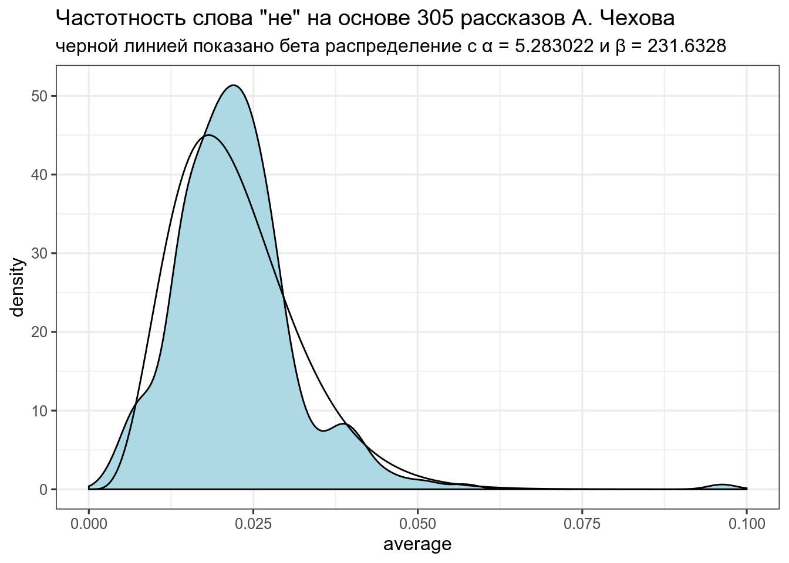
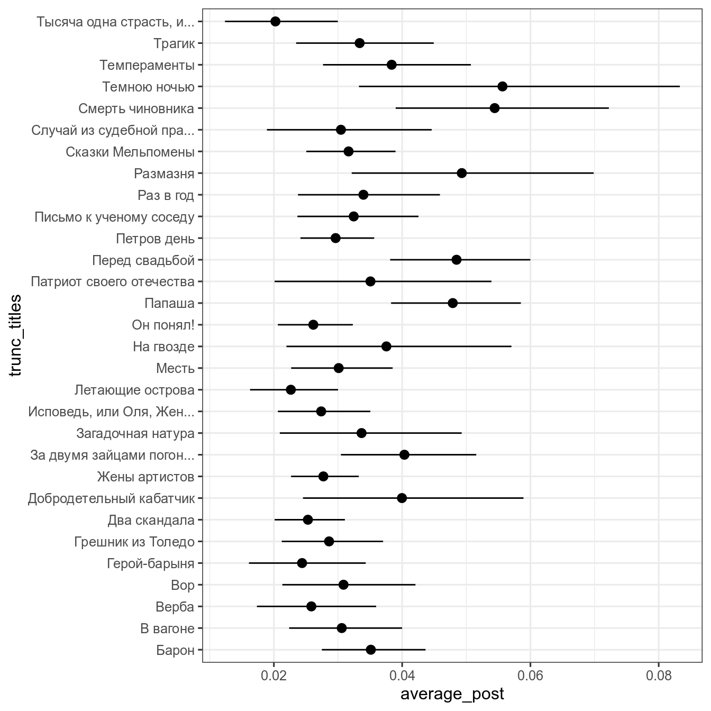

Метод Empirical Bayes estimation — один из байесовских методов, в рамках которого:
chekhov <- read_tsv("https://raw.githubusercontent.com/agricolamz/2019_data_analysis_for_linguists/master/data/tidy_chekhov.tsv")## Parsed with column specification:
## cols(
## titles = col_character(),
## word = col_character(),
## n = col_double(),
## n_words = col_double()
## )chekhov %>%
mutate(trunc_titles = str_trunc(titles, 25, side = "right"),
average = n/n_words) ->
chekhov
head(chekhov)Наши данные:
chekhov %>%
filter(word == "не") %>%
select(trunc_titles, word, average) %>%
ggplot(aes(average)) +
geom_histogram(fill = "lightblue")+
geom_density(color = "red")+
labs(title = 'Частотность слова "не" на основе 305 рассказов А. Чехова')## `stat_bin()` using `bins = 30`. Pick better value with `binwidth`.В данном случае, данные можно подогнать под бета распределение \(Χ \sim Beta(α_0, β_0)\) (это далеко не всегда так). Подгонку можно осуществлять множеством разных функций, но я воспользуюсь следующей системой уравнений:
\[\mu = \frac{\alpha}{\alpha+\beta}\] \[\sigma = \frac{\alpha\times\beta}{(\alpha+\beta)^2\times(\alpha+\beta+1)}\]
Из этой системы можно выразить \(\alpha\) и \(\beta\):
\[\alpha = \left(\frac{1-\mu}{\sigma^2} - \frac{1}{\mu}\right)\times \mu^2\] \[\beta = \alpha\times\left(\frac{1}{\mu} - 1\right)\]
mu <- mean(chekhov$average[chekhov$word == "не"])
var <- var(chekhov$average[chekhov$word == "не"])
alpha0 <- ((1 - mu) / var - 1 / mu) * mu ^ 2
beta0 <- alpha0 * (1 / mu - 1)
alpha0## [1] 5.283022## [1] 231.6328Посмотрим, насколько хорошо, получившееся распределение подходит к нашим данным:
estimation <- data_frame(
x = seq(0, 0.1, length = 1000),
density = c(dbeta(x, shape1 = alpha0, shape2 = beta0)))## Warning: `data_frame()` is deprecated, use `tibble()`.
## This warning is displayed once per session.chekhov %>%
filter(word == "не") %>%
select(trunc_titles, word, average) %>%
ggplot(aes(average)) +
geom_density(fill = "lightblue")+
geom_line(data = estimation, aes(x, density))+
labs(title = 'Частотность слова "не" на основе 305 рассказов А. Чехова',
subtitle = "черной линией показано бета распределение с α = 5.283022 и β = 231.6328")
Полученное распределение можно использовать как априорное распределение для апдейта значений из каждого рассказа. Этот трюк и называется Empirical Bayes estimation.
В датасете собраны данные по числу людей владеющих русским в разных селах Дагестана, родившихся до 1950 года. Проведите эмпирическую байесовскую оценку и постройте следующий график:
## Parsed with column specification:
## cols(
## residence = col_character(),
## speak_russian = col_double(),
## does_not_speak_russian = col_double(),
## average = col_double()
## )ч
Основная соль фреквинтистского доверительного интервала (по-английски confidence interval) основано на правиле трех сигм нормального распределения:
z-score:
Доверительный интервал:
\[\bar{x} \pm z \times \frac{\sigma}{\sqrt{n}}\text{, где } z \text{ — это центральная } 1 - \frac{\alpha}{2} \text{ часть данных}\]
Распространение этой логики на биномиальные данные называется интервал Вальда:
\[\bar{x} = \theta; \sigma = \sqrt{\frac{\theta\times(1-\theta)}{n}}\]
Тогда интервал Вальда:
\[\theta \pm z\times\sqrt{\frac{\theta\times(1-\theta)} {n}}\]
Есть только одна проблема: работает он плохо. Его аналоги перечислены в других работ:
binom.test())binomchekhov %>%
filter(word == "не") %>%
slice(1:30) %>%
group_by(titles) %>%
mutate(low_ci = binom.test(x = n, n = n_words)$conf.int[1],
up_ci = binom.test(x = n, n = n_words)$conf.int[2]) %>%
ggplot(aes(trunc_titles, average))+
geom_point()+
geom_pointrange(aes(ymin = low_ci, ymax = up_ci))+
coord_flip()+
labs(title = 'Среднее и 95% CI употребления "не" в рассказах А. Чехова',
x = "", y = "")В базовом пакете функция binom.test() не позволяет выбирать тип доверительного интервала. ci.method = "Clopper-Pearson" возможна, если включить библиотеку mosaic.
Байесовский доверительный \(k\)-% интервал (по-английски credible interval) — это интервал \([\frac{k}{2}, 1-\frac{k}{2}]\) от апостериорного распределения. Давайте используем распределение, полученное в предыдущем разделе в качестве априорного для тридцати рассказов Чехова:
chekhov %>%
filter(word == "не") %>%
slice(1:30) %>%
group_by(titles) %>%
mutate(alpha_post = n+alpha0,
beta_post = n_words-n+beta0,
average_post = alpha_post/(alpha_post+beta_post),
cred_int_l = qbeta(.025, alpha_post, beta_post),
cred_int_h = qbeta(.975, alpha_post, beta_post)) ->
posterior
posterior %>%
select(titles, n_words, average, average_post) %>%
arrange(n_words)posterior %>%
ggplot(aes(trunc_titles, average_post, ymin = cred_int_l, ymax = cred_int_h))+
geom_pointrange()+
coord_flip()